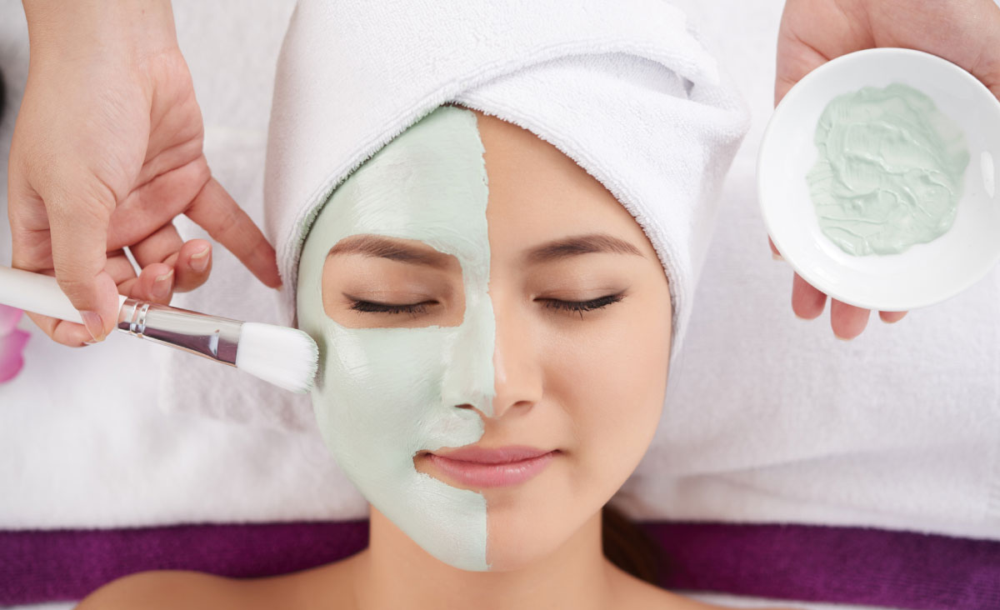

CLÍNICA DE ESTÉTICA DERMO FUNCIONALE

- Página inicial
- Agendar
O que é a Limpeza de pele?
O procedimento reduz a obstrução dos poros que causam a acne, reduz cravos, e higienização profundamente e elimina resíduos acumulados da pele. Indicada para todos os tipos de pele, a limpeza de pele clássica ocorre por meio da extração manual das impurezas. Com a função de remover os resíduos acumulados na superfície da pele, favorece a absorção de dermocosméticos através da desobstrução dos óstios e poros. Além disso, o procedimento aumenta a oxigenação dos tecidos. A limpeza de pele profissional profunda possui etapas consagradas. São elas:
– higienização da pele;
– esfoliação;
– promover emoliência e adstringência;
– acalmar e tratar a pele ao aplicar produtos para limpeza de pele específicos ao tipo de pele;
– proteção solar ao finalizar.
Para que serve a limpeza de pele?
O procedimento reduz a obstrução dos poros que causam a acne, reduz cravos, e higienização profundamente e elimina resíduos acumulados da pele. Indicada para todos os tipos de pele, a limpeza de pele clássica ocorre por meio da extração manual das impurezas.
Para quem é indicado?
A limpeza de pele é um dos procedimentos mais procurados em estética, principalmente por quem tem a pele oleosa com tendência para acne. Mas de acordo com os dermatologistas e esteticistas, fazer limpeza de pele é um procedimento recomendado para todos os tipos de pele, seja oleosa, normal, seca ou madura.
Quais as contraidicações?
Pele muito sensível. Peles que ficam vermelhas com facilidade. Peles com muita descamação. Peles que costumam desenvolver alergias e irritações com facilidade.
Quais resultados esperar?
Tal como o nome sugere, a função do procedimento é limpar profundamente a pele. Além disso, a técnica desobstrui os poros, elimina células mortas e extrai os famosos cravinhos e milium. O tratamento também ajuda a equilibrar o pH da epiderme, tornando os tecidos corporais mais hidratados, tonificados e rejuvenescidos.
Qual o profissional que pode realizar?
Esteticistas, farmacêuticas esteticistas, fisioterapeutas dermatologistas e mé dicas dermatologistas. Em nossa clínica temos a doutora Francielly, a doutora Ana Clara e a doutora Carolina.
Gostou de conhecer sobre a limpeza de pele e se interessou por ela, então, agende sua consulta com algum de nossos profissionais.